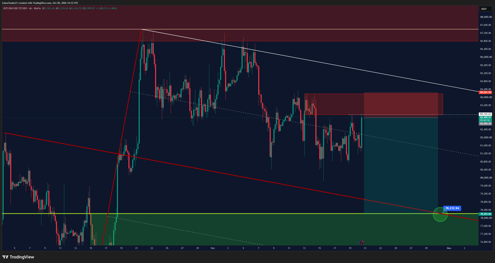
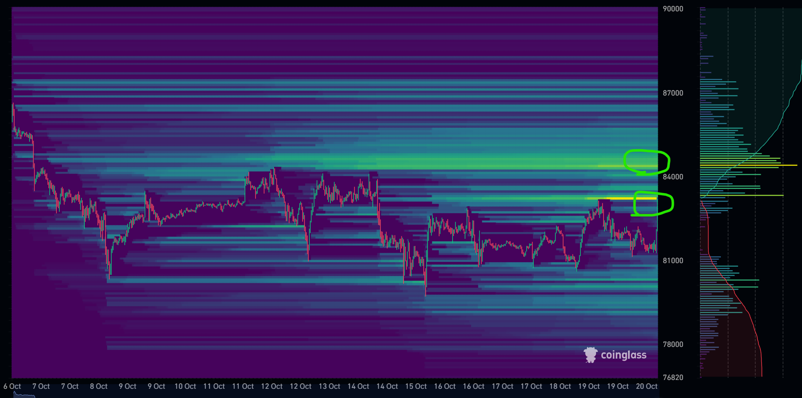
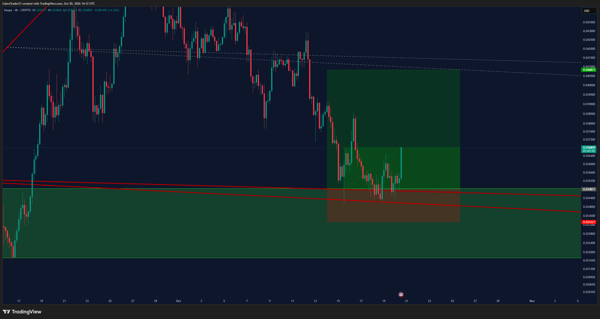
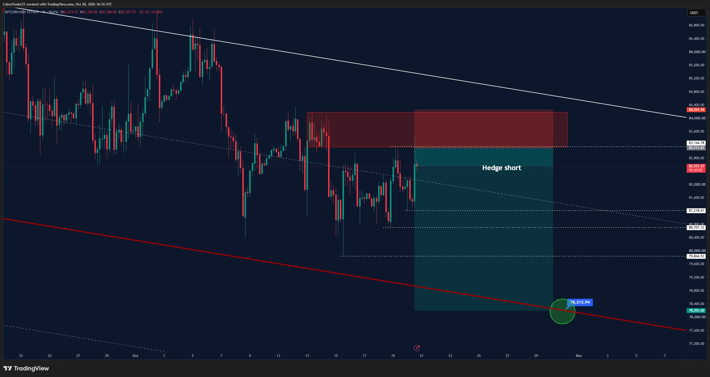
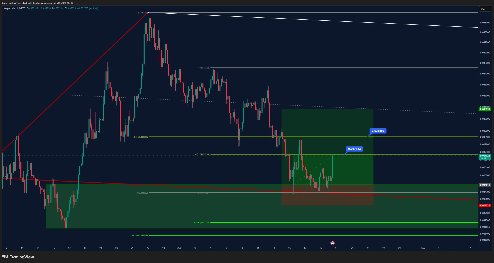

Trades VIP do Cobra. A cor da bolinha no nome do canal mostra o estado do trade.
Atualização 19h: às 13:17 o Cobra postou o gráfico "Hedge short" com entrada ≈83.112 (topo da caixa ≈83.145), stop ≈84.262 e alvo ≈78.213 na linha de tendência, com níveis intermediários ≈81.219, ≈80.707 e ≈79.845 (lidos do gráfico). Disse "Fiquem à vontade para realizar lucro quando se sentirem confortáveis". Às 12:18 mostrou a posição na BloFin: entrada 82.990,1, +14,9%. BTC ~83.021 agora; desde o meio-dia foi de 82.211 a 83.307, longe do stop 84.261. Pelas regras do relatório: a favor do 12h e do 1D, mas o 4h tem Alta ✓ de pé. Executado a mercado, sem alerta.
Sem post novo desde 18/10 10:41. Entrada 11,310 / SL 10,78 / TP 12,125 / 14 / 16,7. LINK ~12,32 agora, entrada ~8,2% abaixo; mínima desde ontem 19h 11,838, não acionou. LINK não está no watchlist do relatório diário, sem leitura do Market Cipher B. Alerta COBRA LINK long 11,310 já existe.
Sem post novo. Níveis ≈ do gráfico: entrada ≈129,94, stop ≈112,41, alvo ≈255,48. AAVE ~156,0, entrada ~16,7% abaixo; mínima desde ontem 19h 147,34. Long contra o 12h e o 1D (Baixa ✓) e o 1W (vermelho definitivo). Alerta COBRA AAVE long ≈129,94 já existe.
Sem post novo no cobra-trade-ideas. Ontem: scalp QNT long 3x, entrada 189,46, +13,48% no cartão da BloFin; não disse se fechou tudo. QNT ~199,0 agora; mínima desde ontem 19h 189,74 (05h), logo acima da entrada. Sem stop/alvo postados, sem alerta.
Canal 🟠btc-long, sem post novo desde 16/10. Entrada ≈79.128 (lida do gráfico), SL 77.537, TP 93.604. BTC ~82,98k, entrada ~4,6% abaixo; mínima desde ontem 19h 81.200, não acionou. Long contra o 12h e o 1D (Baixa ✓; o 1D teve ponto verde na sobrevenda ontem, mas a divergência de baixa segue).
Canal 🟠sol-long-2, sem post novo. ENTRY 99,77 / SL 95,67 / TP1 105,7. SOL ~107,0, entrada ~6,8% abaixo; mínima desde ontem 19h 103,67, não acionou. Contra o 1D (Baixa ✓). Alerta COBRA SOL long 2 99,77 já existe.
Sem post novo desde 18/10 21:49 ("Estamos vivos"). Stop na entrada (2.317), TP1 2.415 já batido, TP2 2.852. ETH ~2.461, ~6,2% acima do stop na entrada; mínima desde ontem 19h 2.372,6, máxima 2.478. Long contra o 12h e o 1D.
Estopou no 0 a 0 em 18/10 (canal 🔴, sem post novo). O alerta antigo COBRA SOL long 101,37 perdeu o sentido.
Atualização 19h: o Cobra postou às 12:41 as resistências ≈0,03711 e ≈0,03855 (gráfico 4h, alvo da caixa ≈0,04083), às 13:22 "0.31 strikes again" e às 14:19 o KAS e o APT como maiores altas do dia. Às 14:22 mostrou a posição: entrada ≈0,03502, +64,6% (alavancado). Stop na entrada ≈0,034811. KAS (Gate.io) ~0,03705 agora; desde o meio-dia foi de 0,03629 a 0,03833 (pegou a 2ª resistência), não voltou ao stop. KAS não está no watchlist, sem leitura do Market Cipher B.
Encerrado 14/10 (saiu na mão). O alerta antigo COBRA BTC long 82.085 perdeu o sentido.
O canal desta ordem limite sumiu da categoria VIP entre o meio-dia e as 19h, sem post explicando. Provavelmente o trade foi cancelado (níveis antigos: entrada 88.440). O alerta antigo COBRA no 88.440 perdeu o sentido; não foi apagado.
O canal desta ordem limite sumiu da categoria VIP entre o meio-dia e as 19h, sem post explicando. Provavelmente o trade foi cancelado (níveis antigos: entrada 2.846). O alerta antigo COBRA no 2.846 perdeu o sentido; não foi apagado.
Ordem antiga (13/08), sem atualização.
Sem atualização desde 17/09. Continua 🟢.
Sem canal APT em VIP-trades e sem menção nova. APT ≈0,823 na Binance (máxima desde ontem 0,8289).
Sem mudança desde 05/09, ainda 🟠. Preço ~0,713, muito abaixo da entrada.
Sem mudança desde 25/09, ainda 🟠. SOL ~107,0, entrada ~24% acima.
BTC perpétuo na Bybit. Valores com ≈ foram lidos das etiquetas do gráfico (ele não escreve os números). Hoje às 10:02 ele fez a live "Monday Update" e às 10:47 postou o gráfico completo.
Sem post novo. Níveis ≈ das etiquetas: entrada ≈84.218, stop ≈85.695, alvo ≈77.414. BTC ~82,98k, entrada ~1,5% acima; máxima desde ontem 19h 83.439, não acionou. Fica logo abaixo do stop do hedge short do Cobra (84.261). A favor do 12h e do 1D, mas bloqueado pela Alta ✓ do 4h. Alerta JAYSON já existe.
ZONA TOCADA: ontem às ~22h o BTC caiu até 81.200, passando pelas zonas 1 (≈81.420–81.600) e 2 (≈81.000–81.100) sem chegar ao stop ≈80.625, e repicou até 83.439 (alvo ≈84.356 ainda não batido). Ele pedia divergência de alta no 12m, 6m e 3m para entrar e não postou nada sobre isso, então não dá para saber se entrou. O alerta JAYSON long local zona 1 (≈81.601) deve ter disparado. Long contra o 12h e o 1D.
Sem post novo. Entrada ≈79.656, stop ≈78.937 (calculado na hora, setup de CDW), alvo ≈86.718. BTC ~82,98k, entrada ~4,0% abaixo; não acionou. Contra o 12h e o 1D.
Sem post novo. Entrada ≈77.743, stop ≈75.185, alvo ≈86.821. BTC ~82,98k, entrada ~6,3% abaixo. Contra o 12h e o 1D.
Sem post novo. Entrada ≈85.568, stop ≈87.346, alvo ≈69.262. BTC ~82,98k, entrada ~3,1% acima. A favor do 12h e do 1D; bloqueado pela Alta ✓ do 4h.
Sem post sobre esse long (entrada 80.250,1, stop ≈77.500, alvo ≈88.000, de 15/10). Não dá para saber se segue aberto. BTC ~82,98k, ~3,4% acima da entrada; a mínima de ontem (81.200) ficou acima do stop.
Substituído pelos setups de short de hoje (short 1 ≈84.218 e short swing ≈85.568).
Plano antigo; ontem às ~22h o BTC fez 81.200, praticamente no stop ≈81.200, então perdeu o sentido.
Plano antigo; ontem o BTC foi a 80.684, abaixo do stop ≈81.200, então perdeu o sentido. O alerta JAYSON BTC long 2ª zona ≈81.600 perdeu o sentido (hoje há o long local na mesma região, com stop ≈80.625).
Zona onde ele entrou (80.250).
Front-runado; sem mudança.
Sem mudança. A favor do 12h e do 1D. Longe.
Histórico; encerrado em 12/10.

Cobra, 20/10 11:12: hedge short no BTC (4h) — entrada ≈83.145, stop 84.261, alvo ≈78.203 (lido do gráfico).

Cobra, 20/10 11:14: mapa de liquidações da Coinglass, com liquidez marcada em ≈84.100–84.500 e ≈83.200.

Cobra, 20/10 11:12: KAS (4h) — entrada ≈0,034811, stop original ≈0,033327 (agora na entrada), alvo ≈0,040831.

Cobra — BTC hedge short 13:17 (4h): entrada ≈83.112, stop ≈84.262, alvo ≈78.213

Cobra — KAS 12:41: resistências ≈0,03711 e ≈0,03855